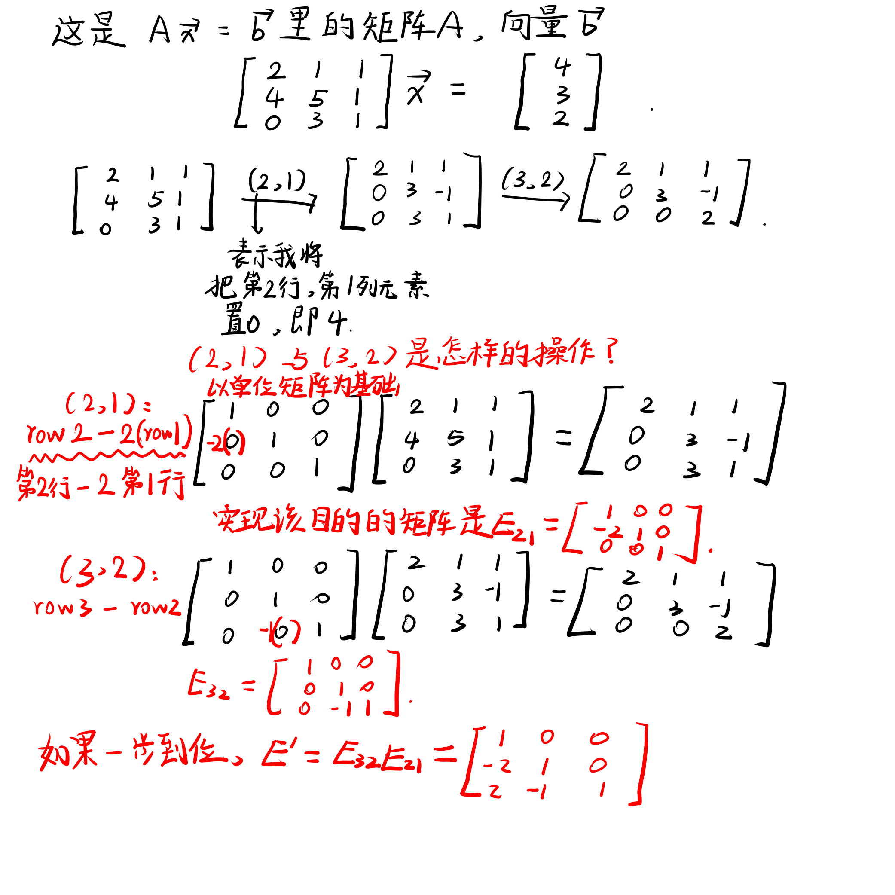

本文将阐述Turok对矩阵和消元法的理解。
矩阵的作用
矩阵是用来求方程组的解的。
求解方程组，可以使用行图(Row Picture)、列图(Column Picture)和矩阵。
行图利用矩阵每一行表示的方程在平面或者空间中对应的图像的重合部分求解方程组。例如二元一次方程组，每一个方程都表示一条在笛卡尔直角坐标系的直线，方程组的解即直线的交点；例如三元一次方程组，每一个方程都表示一个在三维直角坐标系的平面，方程组的解即平面的交线。
列图利用矩阵每一列表示的列向量在平面或者空间中的组合求解方程组。
注意：其中提到的“平面”与“空间”的概念，“平面”不单单指二维平面，“空间”也不只是指三维空间。如果存在一个九维度的区域，我们称之为九维空间；而在这个区域中存在的物体，我们称之为超平面，简称平面。我想表达的是平面与空间是相对而言的，不是平常认识的简单的二维平面与立体空间的概念。
矩阵将求方程组的解抽象化，抽象化的结果为：
矩阵消元
对于方程组，
消元的方法：
- 将矩阵(1,1)位置的元素作为Pivot 1（锚点 1），该位置的元素不能为0；
- 通过加减第一行元素的几倍，令矩阵(2,1)位置的元素变为0；
- 同理，通过加减第一行元素的几倍，令矩阵(3,1)位置的元素变为0；
- 将矩阵(2,2)位置的元素作为Pivot 2（锚点 2），该位置的元素不能为0；
- 通过加减第二行元素的几倍，令矩阵(3,2)位置的元素变为0；
- 同理，等式右侧的向量也进行和矩阵相同的操作。
- 最终我们得到了一个三角矩阵(Triangular Matrix)和一个新向量。
方程组变为了，该方程组求解向量更简单。
在使用矩阵消元法之前，得先仔细观察一下方程组，如果方程组锚点位置为0，而且在它下面的元素均为0，这样一来不管怎么交换行都无法使锚点位置为一个非0值。这种情况下，使无法使用矩阵消元法求得方程组的唯一解的——因为这个唯一解不存在。
对消元过程中的探讨
消元过程中，我们发现，每一次对矩阵的变换都能离目标矩阵更近一步。而对矩阵的变化这个操作，实际上是一次矩阵之间的乘法。
在讨论该问题之前，我先阐述一个事实，假如矩阵左乘矩阵，要求，即左边矩阵的列数与右边矩阵的行数相等，才可以相乘，得到的结果是一个矩阵。
矩阵乘以列向量（前提是可以乘），结果是一个列向量；
行向量乘以矩阵（前提是可以乘），结果是一个行向量。
消元过程中我们对矩阵变换，实际上是一次矩阵之间的乘法。这是一个单位矩阵，其对角线上元素均为1，其他元素均为0。单位矩阵的特点是它乘以任意一个矩阵，矩阵还是它自己，也就是毫无变化。
为了方便，我们把能将矩阵中第行第列的元素置0的矩阵叫作。
消元的过程我将用图来解释。

简单来说，就是把对矩阵的操作，施加给单位矩阵，这样经过变换的单位矩阵能够表示一种变换，经过该变换后能得到一个新矩阵。